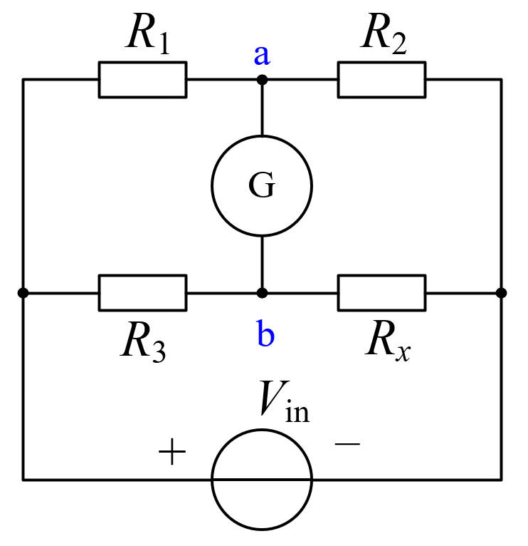

Classic bridge circuit | Adjust bridge arm resistors and observe galvanometer current | Balance condition \(R_1/R_2 = R_3/R_x\)
\(U_{in} = 10\text{V}\) (fixed) | Galvanometer internal resistance \(R_G = 100\,\Omega\)
Fixed DC voltage source

When the bridge arm resistors satisfy \(R_1/R_2 = R_3/R_x\) (i.e., \(R_1 R_x = R_2 R_3\)), the galvanometer voltage \(U_G = 0\) and the bridge is balanced. At this point \(U_a = U_b\) and no current flows through the galvanometer. This simulation allows independent adjustment of all four bridge arm resistors, providing an intuitive demonstration of establishing and deviating from the balance condition. At balance, \(R_x = R_2 R_3 / R_1\), which can be used for precise measurement of an unknown resistance.
Galvanometer internal resistance \(R_G = 100\,\Omega\), used to detect small imbalance currents. Bridge sensitivity depends on the galvanometer's current detection capability and the bridge arm resistance values. When \(U_G\) is near zero, the galvanometer needle is centered; when deviating from balance, the current direction indicates the relative magnitude of \(U_a\) and \(U_b\). Click the "Auto Balance" button to automatically adjust \(R_x\) to the balance value.